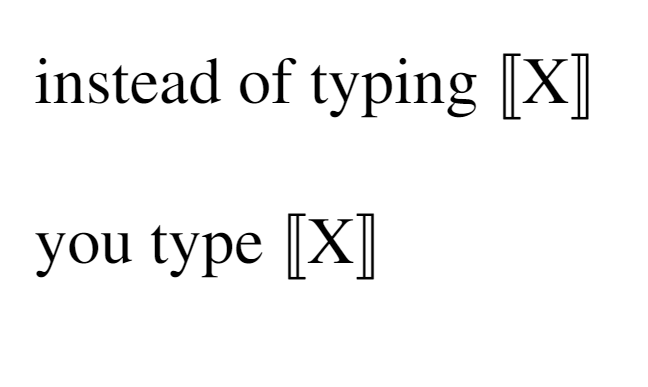
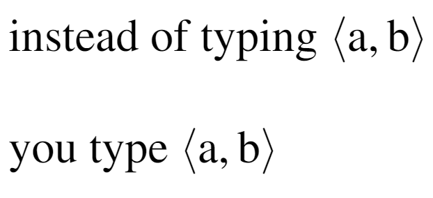
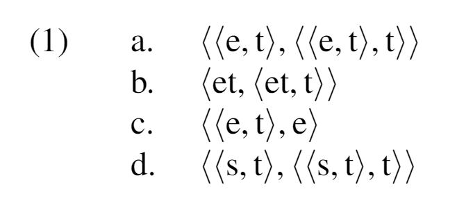
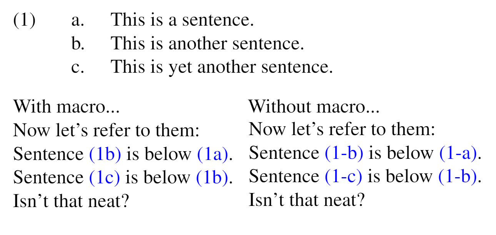

Compiled by Ian Kirby (Site, Twitter)
These are some useful linguistics-related LaTeX resources that I've gathered or written over the years. It's basically the result of googling around for particular typesetting problems that come up, and of course asking my colleagues for help with particular issues.
The code samples below include required packages the macro, then a code sample in below ellipsis. For each relevant macro and packages, they are bolded. That is...
\usepackage{times} % <------ this goes in the preamble
...
% <------ this is where the body begins.
Here is a code sample.
The times package changes the font to Times New Roman.
\usepackage{stmaryrd} %Required for double brackets <\llbracket, \rrbracket)
\newcommand{\lf}[1]{$\llbracket$#1$\rrbracket$}
...
instead of typing $\llbracket$X$\rrbracket$
you type \lf{X}
which will produce....
If you would like space between the element in the brackets, change the macro to \newcommand{\lf}[1]{$\llbracket$ #1 $\rrbracket$} (i.e. add a space in the macro)
\newcommand{\op}[2]{\ensuremath{\langle #1,#2\rangle}}
...
instead of typing $\langle a, b\rangle$
you type \op{a}{b}
which will produce ...
This is nice because LaTeX linters don't (as far as I know) highlight the scope of $\langle$, $\rangle$. Some really nice things about this are how straightforward it is to embed it
\newcommand{\op}[2]{\ensuremath{\langle #1,#2\rangle}}
\usepackage{linguex}
\ex.
\a.\op{\op{e}{t}}{\op{\op{e}{t}}{t}}
\b.\op{et}{\op{et}{t}}
\b.\op{\op{e}{t}}{e}
\b.\op{\op{s}{t}}{\op{\op{s}{t}}{t}}

\renewcommand{\firstrefdash}{}
\usepackage{linguex}
...
\ex.
\a.\label{x}This is a sentence.
\b.\label{y}This is another sentence.
\b.\label{z}This is yet another sentence.
Now let's refer to them:\\
Sentence \ref{y} is below \ref{x}.\\
Sentence \ref{z} is below \ref{y}.\\
Isn't that neat?

The linguex package can be pretty finicky with spacing. Sometimes, if you are comparing similar patterns in different languages, it's clearest to put the name of the language in the right margin that follows the example.
\newcommand{\rcommentg}[1]{\hfill\raisebox{1.9\baselineskip}[0pt][0pt]{#1}}
\usepackage{linguex}
...
\ex.
\ag.Rechts -schutz -versicher -ung -s -gesellschaft -en\\
legal -protection -insure -\textsc{nmlz} -\textit{s} -society -\textsc{pl}\\
`insurance policies which provide legation protections'\rcommentg{(German)}
\bg.kolmi -vaihe -kilo -watti -tunti -mitta -ri\\
three -phase -kilo -watt -hour -meter -\textsc{nom}\\
`electricity meter'\rcommentg{(Finnish)}
\bg.al -fr{\ae}{\eth}i -or{\eth}a -b{\ae}k -ur -nar\\
all -study -word -book -\textsc{nom/acc.pl} -\textsc{def}\\
`the encyclopedias'\rcommentg{(Icelandic)}
\bg.z\`{\i} d\`{o}ng gu\'{\i} yu\'{a}n j\'{\i}\\
self move cabinet money machine\\
`ATM (automated teller machine)' \rcommentg{(Mandarin)}
This is caused by using the dotted-i as the base character (i.e. you are typing \={i}, etc. The solution to this is to use the dotless-i: ı, which you can get through the command \i
Instead of \={i}, \~{i}, \u{i}, \v{i}
you have to type \={\i}, \~{\i}, \u{\i}, \v{\i}